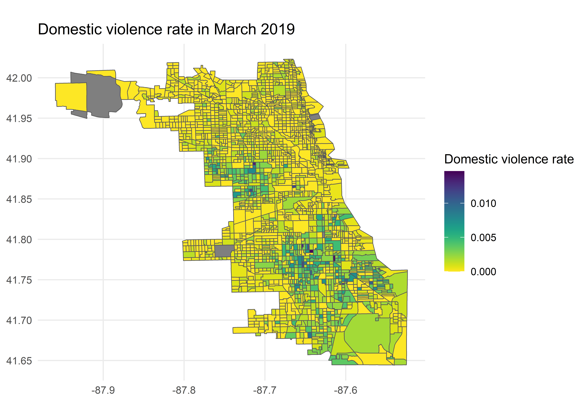

My Final Project Template
Subtitle here if desired
Ting Chang
Introduction
[~ 200 words]
Clearly stated background and questions / hypotheses / problems being addressed. Sets up the analysis in an interesting and compelling way.
Materials and methods
[~ 200 words]
Narrative: Clear narrative description of the data sources and methods. Includes data from at least two sources that were integrated / merged in R.
Code: The code associated with the project is well organized and easy to follow. Demonstrates mastery of R graphics and functions.
Data: The underlying data are publicly accessible via the web and downloaded/accessed within the Rmd script. If you want to use your own data, you must make it available on a website (e.g. Figshare) so that others are able to re-run your code.
You can do bullets like this:
- The first most important thing
- The second most important thing
- The third most important thing
You can do numbers like this:
- The first most important thing
- The second most important thing
- The third most important thing
See http://rmarkdown.rstudio.com/ for all the amazing things you can do.
Load required packages (you may need to install some packages).
library(tidyverse)
library(tidycensus)
library(kableExtra)
library(ggplot2)
library(sf)
library(RColorBrewer)
library(viridis)
library(gridExtra)
knitr::opts_chunk$set(cache=TRUE) # cache the results for quick compiling
Sys.setenv("LANGUAGE"="En")
Sys.setlocale("LC_ALL", "English")Download and clean all required data
Load chicago’s census block group shapefile from data folder
# Load chicago CBG shapefile in R
chicago_cbg <- st_read("data/chicago_cbg.shp") %>%
select(CensusBloc)## Reading layer `chicago_cbg' from data source `D:\Users\Ting\Documents\R\geo511-2020-project-tingtchang\data\chicago_cbg.shp' using driver `ESRI Shapefile'
## Simple feature collection with 2184 features and 8 fields
## geometry type: POLYGON
## dimension: XYZ
## bbox: xmin: -87.95924 ymin: 41.64429 xmax: -87.52366 ymax: 42.02314
## z_range: zmin: 0 zmax: 0
## geographic CRS: WGS 84Download census data from tidycensus.
# For searching variables from ACS-5yr 2018
v18 <- load_variables(2018, "acs5", cache = TRUE)
# Downloading population data
population_18 <- get_acs(geography = "block group",
variables = c(population = "B01003_001"),
state = "IL",
county = c("Cook", "DuPage"),
year = 2018)
# Downloading median household income data
median_income_18 <- get_acs(geography = "block group",
variables = c(medincome = "B19013_001"),
state = "IL",
county = c("Cook", "DuPage"),
year = 2018)
# Downloading employment data
employment_18 <- get_acs(geography = "block group",
variables = c(total_in_labor = "B23025_002", unemployed = "B23025_005"),
state = "IL",
county = c("Cook", "DuPage"),
year = 2018,
output = "wide")
# Crop census data to the City of Chicago
population_18 <- left_join(chicago_cbg, population_18, by = c("CensusBloc" = "GEOID")) %>%
select(CensusBloc, population = estimate)
median_income_18 <- left_join(chicago_cbg, median_income_18, by = c("CensusBloc" = "GEOID")) %>%
select(CensusBloc, median_income = estimate)
employment_18 <- left_join(chicago_cbg, employment_18, by = c("CensusBloc" = "GEOID")) %>%
select(CensusBloc, total_in_labor = total_in_laborE, unemployed = unemployedE) %>%
mutate(unemployment_rate = unemployed/total_in_labor)Download crime report data from Chicago Data Portal (access via SODA API).
# Downloading crime report via SODA API
dataurl = "https://data.cityofchicago.org/resource/ijzp-q8t2.csv?$order=Date DESC&$limit=460000&$offset=20000"
tdir = tempdir()
download.file(dataurl, destfile = file.path(tdir, "chicago_crime.csv"))
chicago_crime <- read_csv(paste(tdir,"/chicago_crime.csv", sep = ""))
chicago_crime_clean <- chicago_crime %>%
mutate(date = as.Date(date, "%Y.%m.%d")) %>%
filter(as.Date(date) >= "2018-12-31" & as.Date(date) <= "2020-10-04") %>%
select(-block, -iucr, -beat, -district, -ward, -community_area, -year, -location) %>%
drop_na(latitude, longitude)Process the domestic violence data
list_location <- c("APARTMENT",
"CHA APARTMENT",
"CHA HALLWAY / STAIRWELL / ELEVATOR",
"CHA HALLWAY/STAIRWELL/ELEVATOR",
"CHA PARKING LOT",
"CHA PARKING LOT / GROUNDS",
"CHA PARKING LOT/GROUNDS",
"COACH HOUSE",
"DRIVEWAY - RESIDENTIAL",
"HOUSE",
"NURSING / RETIREMENT HOME",
"NURSING HOME/RETIREMENT HOME",
"RESIDENCE",
"RESIDENCE - GARAGE",
"RESIDENCE - PORCH / HALLWAY",
"RESIDENCE - YARD (FRONT / BACK)",
"RESIDENCE PORCH/HALLWAY",
"RESIDENCE-GARAGE",
"RESIDENTIAL YARD (FRONT/BACK)")
list_crime_type <- c("ARSON",
"ASSAULT",
"BATTERY",
"BURGLARY",
"CRIM SEXUAL ASSAULT",
"CRIMINAL SEXUAL ASSAULT",
"DOMESTIC VIOLENCE",
"HOMICIDE",
"INTIMIDATION",
"KIDNAPPING",
"OBSCENITY",
"OFFENSE INVOLVING CHILDREN",
"OTHER OFFENSE",
"SEX OFFENSE",
"STALKING")
chicago_dv <- chicago_crime_clean %>%
filter(domestic == TRUE & location_description %in% list_location & primary_type %in% list_crime_type)dv_count_week <- chicago_dv %>%
group_by(week = cut(date, "week")) %>%
tally(name = "dv_count") %>%
mutate(week = as.Date(week))
# Aggregate by week learned from:
# https://stackoverflow.com/questions/40554231/dplyr-lubridate-how-to-aggregate-a-dataframe-by-week/40554522
# Count observations learned from official document:
# https://dplyr.tidyverse.org/reference/tally.htmlchicago_dv <- st_as_sf(chicago_dv, coords = c("longitude", "latitude"), crs = st_crs(chicago_cbg))
chicago_cbg_dv <- st_join(chicago_dv, chicago_cbg) %>%
st_set_geometry(NULL)## although coordinates are longitude/latitude, st_intersects assumes that they are planar
## although coordinates are longitude/latitude, st_intersects assumes that they are planarcbg_dv_march19 <- chicago_cbg_dv %>%
filter(date >= "2019-03-01" & date <= "2019-03-31") %>%
group_by(CensusBloc) %>%
tally(name = "dv_count") %>%
right_join(population_18, by = "CensusBloc") %>%
mutate(dv_count = replace_na(dv_count, 0), dv_rate = dv_count/population)
cbg_dv_april19 <- chicago_cbg_dv %>%
filter(date >= "2019-04-01" & date <= "2019-04-30") %>%
group_by(CensusBloc) %>%
tally(name = "dv_count") %>%
right_join(population_18, by = "CensusBloc") %>%
mutate(dv_count = replace_na(dv_count, 0), dv_rate = dv_count/population)
cbg_dv_march20 <- chicago_cbg_dv %>%
filter(date >= "2020-03-01" & date <= "2020-03-31") %>%
group_by(CensusBloc) %>%
tally(name = "dv_count") %>%
right_join(population_18, by = "CensusBloc") %>%
mutate(dv_count = replace_na(dv_count, 0), dv_rate = dv_count/population)
cbg_dv_april20 <- chicago_cbg_dv %>%
filter(date >= "2020-04-01" & date <= "2020-04-30") %>%
group_by(CensusBloc) %>%
tally(name = "dv_count") %>%
right_join(population_18, by = "CensusBloc") %>%
mutate(dv_count = replace_na(dv_count, 0), dv_rate = dv_count/population)
# replace_na learned from the official document:
# https://dplyr.tidyverse.org/reference/tally.htmlmap_dv_march19 <- ggplot(data=cbg_dv_march19, aes(geometry=geometry)) +
geom_sf(aes(fill = dv_rate)) +
scale_fill_viridis(option="inferno", direction = -1) +
theme_minimal() +
theme(legend.position = 'bottom') +
# theme(axis.line = element_blank(), axis.text = element_blank(),
# axis.ticks = element_blank(), axis.title = element_blank()) +
labs(title = "Domestic violence rate in March 2019",
fill = "Domestic violence rate")
map_dv_april19 <- ggplot(data=cbg_dv_april19, aes(geometry=geometry)) +
geom_sf(aes(fill = dv_rate)) +
scale_fill_viridis(option="inferno", direction = -1) +
theme_minimal() +
theme(legend.position = 'bottom') +
# theme(axis.line = element_blank(), axis.text = element_blank(),
# axis.ticks = element_blank(), axis.title = element_blank()) +
labs(title = "Domestic violence rate in April 2019",
fill = "Domestic violence rate")
map_dv_march20 <- ggplot(data=cbg_dv_march20, aes(geometry=geometry)) +
geom_sf(aes(fill = dv_rate)) +
scale_fill_viridis(option="inferno", direction = -1) +
theme_minimal() +
theme(legend.position = 'bottom') +
# theme(axis.line = element_blank(), axis.text = element_blank(),
# axis.ticks = element_blank(), axis.title = element_blank()) +
labs(title = "Domestic violence rate in March 2020",
fill = "Domestic violence rate")
map_dv_april20 <- ggplot(data=cbg_dv_april20, aes(geometry=geometry)) +
geom_sf(aes(fill = dv_rate)) +
scale_fill_viridis(option="inferno", direction = -1) +
theme_minimal() +
theme(legend.position = 'bottom') +
# theme(axis.line = element_blank(), axis.text = element_blank(),
# axis.ticks = element_blank(), axis.title = element_blank()) +
labs(title = "Domestic violence rate in April 2020",
fill = "Domestic violence rate")
grid.arrange(map_dv_march19, map_dv_march20,
map_dv_april19, map_dv_april20,
nrow = 2, ncol = 2)
# Reverse color palette:
# https://stackoverflow.com/questions/45868625/how-to-reverse-the-default-color-palette-for-ggplot2Add any additional processing steps here.
Results
[~200 words]
Tables and figures (maps and other graphics) are carefully planned to convey the results of your analysis. Intense exploration and evidence of many trials and failures. The author looked at the data in many different ways before coming to the final presentation of the data.
Show tables, plots, etc. and describe them.
Lineplot of domestic violence count
dv_col <- brewer.pal(8, "Dark2")[2]
ggplot(data = dv_count_week, aes(x = week, y = dv_count, group = 1)) +
geom_line(color = dv_col, lwd = 0.8, alpha=0.7) +
geom_point(color = dv_col, alpha=0.7) +
scale_x_date(date_labels = "%b %Y", date_breaks = "1 months") +
labs(x = "Month", y = "Count of Domestic Violence") +
theme_light() +
theme(axis.text.x = element_text(angle=45, hjust = 1))
Conclusions
[~200 words]
Clear summary adequately describing the results and putting them in context. Discussion of further questions and ways to continue investigation.
References
All sources are cited in a consistent manner